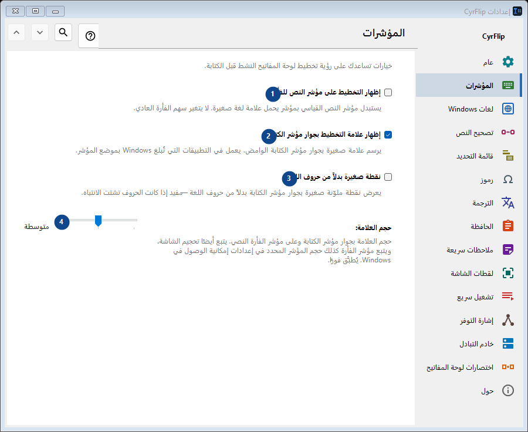
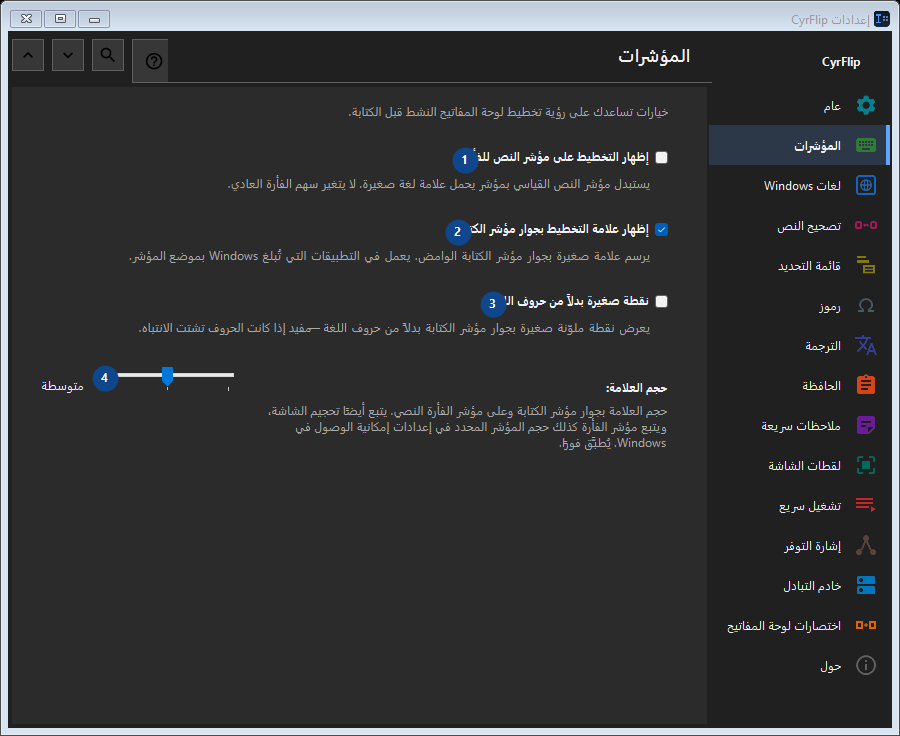

المؤشرات
الغرض
خيارات تساعدك على رؤية تخطيط لوحة المفاتيح النشط قبل الكتابة.


ترتيب الاستخدام
تُطبق الإعدادات فورًا. لا يوجد ترتيب إلزامي؛ استخدم المجموعات أدناه.
العناصر
1. إظهار التخطيط على مؤشر النص للفأرة
يستبدل مؤشر النص القياسي بمؤشر يحمل علامة لغة صغيرة. لا يتغير سهم الفأرة العادي.
اختصاراتك2. إظهار علامة التخطيط بجوار مؤشر الكتابة
يرسم علامة صغيرة بجوار مؤشر الكتابة الوامض. يعمل في التطبيقات التي تُبلغ Windows بموضع المؤشر.
اختصاراتك3. نقطة صغيرة بدلاً من حروف اللغة
يعرض نقطة ملوّنة صغيرة بجوار مؤشر الكتابة بدلاً من حروف اللغة — مفيد إذا كانت الحروف تشتت الانتباه.
اختصاراتك4. حجم العلامة
اختر أو أدخل القيمة الموضحة بجانب الحقل. راجعها قبل المتابعة.
اختصاراتك